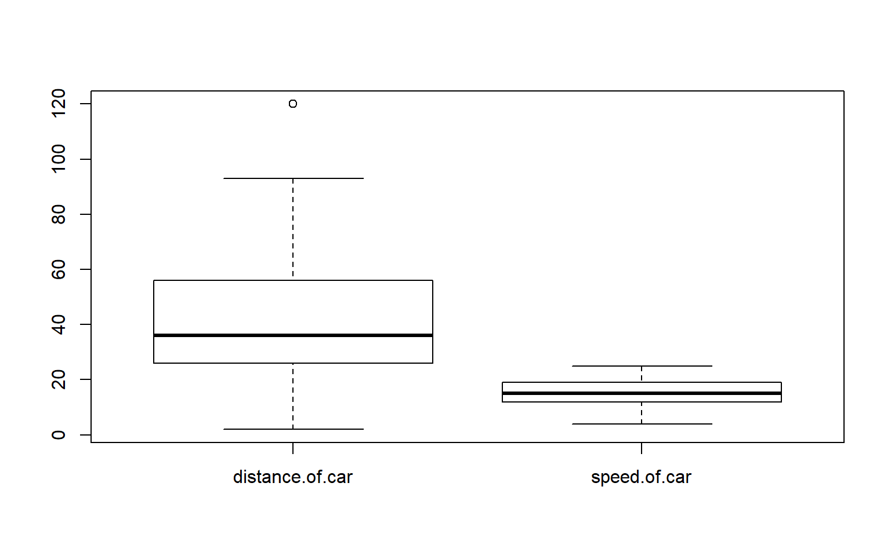
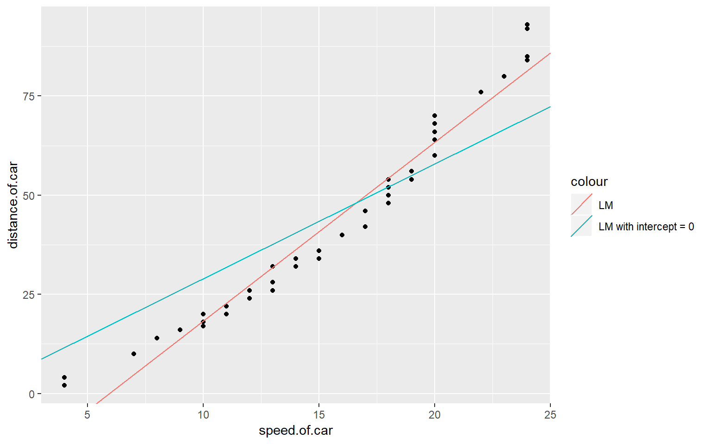

Cars dataset

Example of solution
Preprocessing
Load data and change variable types
pacman::p_load(ggplot2, prettydoc)
cars <- read.csv("C:/Users/gabri/Desktop/Ubiqum/R/Data_Analytics_Predicting_Customer_Preference/Task_1/cars.csv")
#cars <- read.csv("C:/SARA/Ubiqum/CodeAcademy/Section2/Task1/cars.csv")
cars$speed.of.car <- as.numeric(cars$speed.of.car)
cars$distance.of.car <- as.numeric(cars$distance.of.car)Exploratory analysis
In the initial exploration you can already estimate an outlier
plot(cars$speed.of.car, cars$distance.of.car)
Check for distributions
box_plot <- boxplot(cars[, c("distance.of.car","speed.of.car")])
Exclude outlier
cars <- cars[which(cars$distance.of.car != box_plot$out),]Modeling
Split data
set.seed(314)
train_size <- round(nrow(cars)*0.7)
test_size <- nrow(cars)-train_size
training_indices <- sample(seq_len(nrow(cars)), size = train_size)
train_set <- cars[training_indices,]
test_set <- cars[-training_indices,]Train a model
lm <- lm(distance.of.car~ speed.of.car,train_set)
Pred_dist <- predict(lm,test_set)
test_set$Pred_dist <- Pred_distPlot model
ggplot(cars, aes(x=speed.of.car, y=distance.of.car)) + geom_point() +
geom_abline(aes(intercept=lm$coefficients[1], slope=lm$coefficients[2]), colour='red')+
labs(title = paste("Model with normal intercept\n","Adj R2 = ",signif(summary(lm)$adj.r.squared, 5),
"Intercept =",signif(lm$coef[[1]],5 ),
" Slope =",signif(lm$coef[[2]], 5),
" P =",signif(summary(lm)$coef[2,4], 5)))
The intercept in the model above is at negative levels, which doesn’t make logical sense. The car should be driving at a speed of -25 in order to achieve a distance of zero. Instead, we will try to fix the intercept at zero. Below, we can see the fit becomes worse when we fix the intercept at zero and keep the model linear.
lm_intercept <- lm(distance.of.car~ 0+speed.of.car,train_set)
Pred_dist_intercept <- predict(lm_intercept,test_set)
test_set <- cbind(test_set, Pred_dist_intercept)
# Model with intercept = 0
ggplot(cars, aes(x=speed.of.car, y=distance.of.car)) + geom_point() + xlim(-2, 30) +
geom_abline(aes(intercept=0, slope=lm_intercept$coefficients[1]), colour='turquoise2') +
labs(title = paste("Model with intercept = 0\n","Adj R2 =" ,signif(summary(lm_intercept)$adj.r.squared, 5),
"Intercept = 0 ",
" Slope =",signif(lm_intercept$coef[[1]], 5),
" P =",signif(summary(lm_intercept)$coef[1,3], 4))) 
Let’s compare both models
# Comparing both linear regressions
ggplot(cars, aes(x=speed.of.car, y=distance.of.car)) + geom_point() +
geom_abline(aes(intercept=lm$coefficients[1], slope=lm$coefficients[2], colour='LM')) +
geom_abline(aes(intercept=0, slope=lm_intercept$coefficients[1], colour='LM with intercept = 0 ')) 
test_set$error_lm <- test_set$distance.of.car - test_set$Pred_dist
test_set$abs_error_lm <- abs(test_set$distance.of.car - test_set$Pred_dist)
test_set$rel_error_lm <- test_set$abs_error_lm/test_set$distance.of.car
test_set$abs_error_model_intercept <- abs(test_set$distance.of.car - test_set$Pred_dist_intercept)
test_set$rel_error_model_intercept <- test_set$abs_error_model_intercept/test_set$distance.of.car
MAE_lm <- mean(test_set$abs_error_lm)
MAE_model_intercept <- mean(test_set$abs_error_model_intercept)Log model
We can try to log it:
lm_log <- lm(log(distance.of.car) ~ speed.of.car,train_set)
test_set$pred_dist_log <- predict(lm_log,test_set)
test_set$pred_dist_log <- exp(test_set$pred_dist_log)
ggplot(cars, aes(x=speed.of.car, y=log(distance.of.car))) + geom_point() +
geom_abline(aes(intercept=lm_log$coefficients[1], slope=lm_log$coefficients[2]), colour='red')+
labs(title = paste("Model with log \n","Adj R2 = ",signif(summary(lm_log)$adj.r.squared, 5),
"Intercept =",signif(lm_log$coef[[1]],5 ),
" Slope =",signif(lm_log$coef[[2]], 5),
" P =",signif(summary(lm_log)$coef[2,4], 5)))
lm_sqr <- lm(distance.of.car ~ I(speed.of.car^2),train_set)
test_set$pred_dist_sqr <- predict(lm_log,test_set)
ggplot(cars, aes(x=I(speed.of.car^2), y=distance.of.car)) + geom_point() +
geom_abline(aes(intercept=lm_sqr$coefficients[1], slope=lm_sqr$coefficients[2]), colour='red')+
labs(title = paste("Model with squared x\n","Adj R2 = ",signif(summary(lm_sqr)$adj.r.squared, 5),
"Intercept =",signif(lm_sqr$coef[[1]],5 ),
" Slope =",signif(lm_sqr$coef[[2]], 5),
" P =",signif(summary(lm_sqr)$coef[2,4], 5)))
Error Analysis
Relative error
plot(test_set$speed.of.car, test_set$rel_error_lm, main = "Relative error")
plot(test_set$speed.of.car, test_set$error_lm, main = "Error")